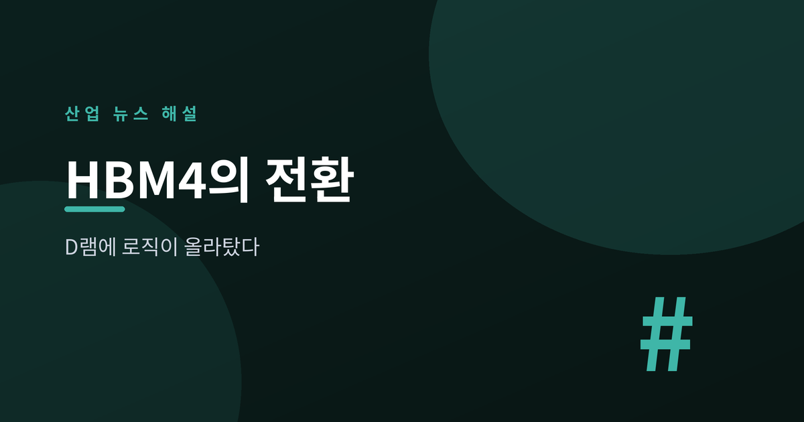
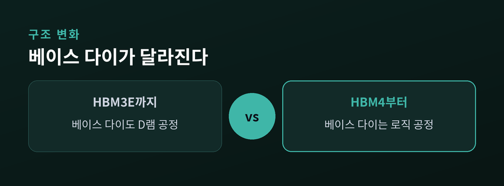
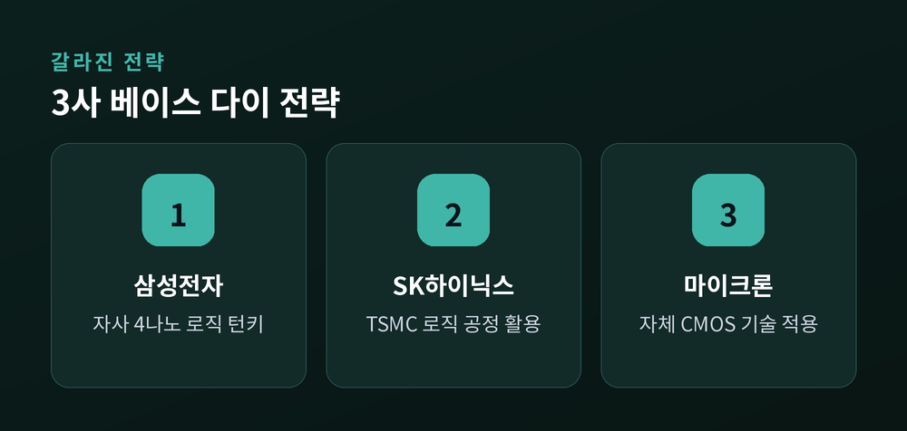
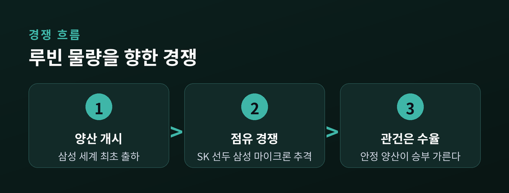

D램에 로직이 올라탔다

AI 인프라 투자가 불붙으면서 메모리 반도체가 다시 슈퍼사이클에 올라탔습니다. 그 중심에 차세대 고대역폭메모리 HBM4가 있습니다. 이번 세대는 단순한 성능 향상을 넘어, 메모리 구조 자체가 처음으로 바뀌는 전환점이라는 점에서 의미가 다릅니다.
2026년 7월 현재, HBM 시장은 기존 HBM3E에서 HBM4 중심으로 재편되는 국면에 들어섰습니다.
삼성전자는 지난 2월 업계 최초로 HBM4 양산 출하를 시작했고, 출하 약 130일 만에 매출 10억 달러를 넘겼습니다. 마이크론도 최근 분기 실적에서 HBM4 매출 10억 달러 달성을 발표했습니다. SK하이닉스는 앞서 12단 샘플을 공급하며 기술 경쟁의 문을 열었습니다.
세 회사 모두 같은 목표를 봅니다. 엔비디아의 차세대 AI 가속기 '루빈(Rubin)'에 들어갈 HBM4 물량입니다.
HBM4가 특별한 이유는 성능 수치가 아니라 만드는 방식에 있습니다.
지금까지 HBM은 데이터를 저장하는 코어 다이와, 맨 아래에서 신호를 정리하는 베이스 다이를 모두 D램 공정으로 만들었습니다. HBM4부터는 이 베이스 다이를 파운드리의 로직 공정으로 바꿉니다. 메모리 위에 사실상 '작은 연산 칩'을 붙이는 셈입니다.
이 변화가 가져오는 이점은 분명합니다. 전력 소모가 줄고, 성능이 오르며, 고객이 원하는 기능을 베이스 다이에 맞춤형으로 넣을 수 있습니다. 메모리와 로직의 경계가 흐려지는 첫 세대인 셈입니다.
"HBM4는 메모리와 로직을 하나로 묶는 첫 표준이다." — JEDEC(HBM4 표준 JESD270-4)

같은 HBM4라도 세 회사가 베이스 다이를 만드는 방식은 다릅니다.
삼성전자는 자사 파운드리의 4나노 로직 공정으로 베이스 다이를 직접 만들고, 패키징까지 한 지붕 아래에서 처리합니다. 실리콘부터 패키징까지 전 과정을 자체 소화하는 유일한 '턴키' 공급사라는 점이 강점입니다.
SK하이닉스와 마이크론은 다른 길을 택했습니다. SK하이닉스는 베이스 다이에 TSMC의 로직 공정을 활용하고, 마이크론은 자체 CMOS 기술을 씁니다. 최선단 공정보다 비용을 낮추는 선택입니다.
시장 위치도 다릅니다. 2026년 1분기 매출 기준 HBM 점유율은 SK하이닉스가 58%로 선두이고, 삼성전자와 마이크론이 각각 21%로 뒤를 잇습니다.

관건은 '루빈' 물량을 누가 얼마나 가져가느냐입니다.
한 증권사(UBS)는 SK하이닉스가 루빈용 HBM4에서 약 70% 점유율을 지킬 것으로 봤습니다. 삼성전자는 세계 최초 양산이라는 기록으로 추격의 발판을 마련했고, 마이크론은 연말까지 점유율을 20%대로 끌어올리겠다고 밝혔습니다.
물론 변수는 남아 있습니다. 로직 공정 전환은 원가와 수율 관리가 이전보다 까다롭습니다. 슈퍼사이클이라는 표현이 무색하지 않으려면, 수요만큼 안정적인 양산이 뒷받침돼야 합니다.

### HBM4 핵심 스펙·경쟁 구도
| 구분 | 내용 |
|---|---|
| 인터페이스 폭(스택당) | 2048비트 (JEDEC JESD270-4) |
| 핀당 전송속도 | 최대 8Gbps 내외(표준 기준) |
| 베이스 다이 | D램 공정 → 로직(파운드리) 공정으로 전환 |
| 삼성 방식 | 1c D램 + 자사 4나노 로직, 턴키 |
| SK·마이크론 방식 | TSMC 로직 / 자체 CMOS 활용 |
| Q1 2026 HBM 점유율 | SK 58% · 삼성 21% · 마이크론 21% |
정리하면 이렇습니다.
HBM4의 진짜 변화는 대역폭 숫자가 아니라, 메모리가 로직을 품기 시작했다는 구조의 전환입니다. 이 첫 단추를 누가 더 안정적으로 꿰느냐에 따라, 다음 슈퍼사이클의 주도권이 갈릴 것입니다.
메모리는 더 이상 '저장만 하는 부품'이 아닙니다. 이제 연산의 문턱까지 걸쳐 있습니다.
이 글은 정보 제공을 목적으로 하며 투자 권유가 아닙니다.